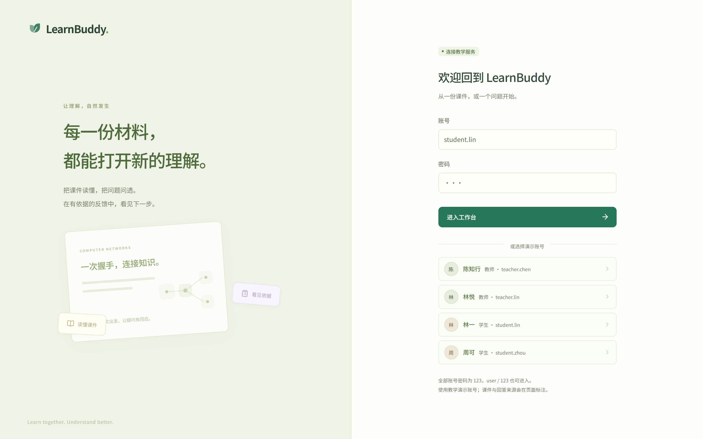 登录页 线上 3088 #home 00-login.png · 213 KB · 2880×1800 LearnBuddy. 让理解，自然发生 每一份材料， 都能打开新的理解。 把课件读懂，把问题问透。 在有依据的反馈中，看见下一步。 COM
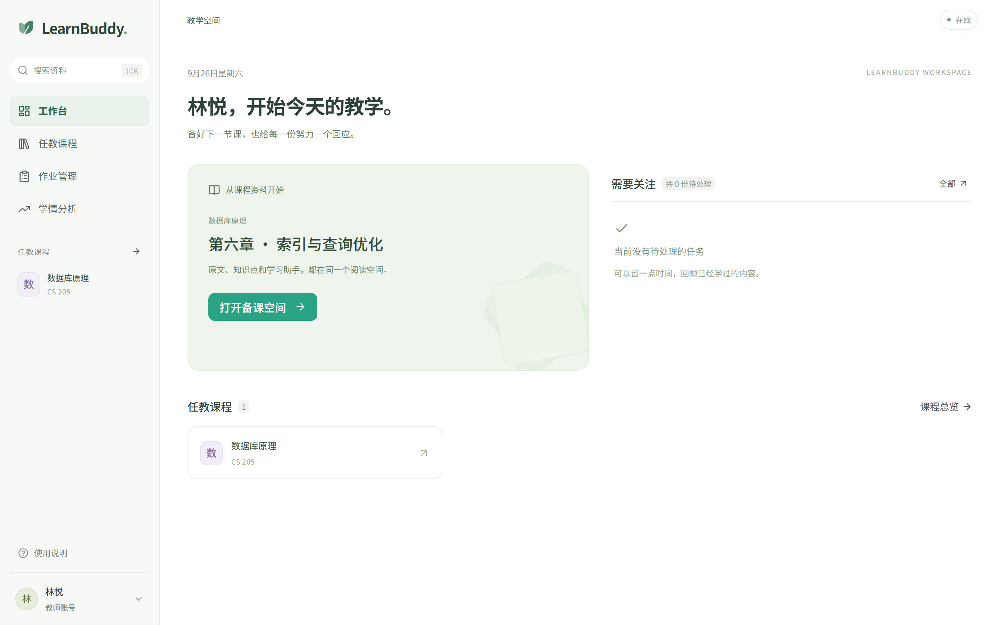 教学空间（教师首页） 线上 3088 #home 10-teacher-home.png · 197 KB · 2880×1800 LearnBuddy. 搜索资料 ⌘ K 工作台 任教课程 作业管理 学情分析 任教课程 数 数据库原理 CS 205 使用说明 林 林悦
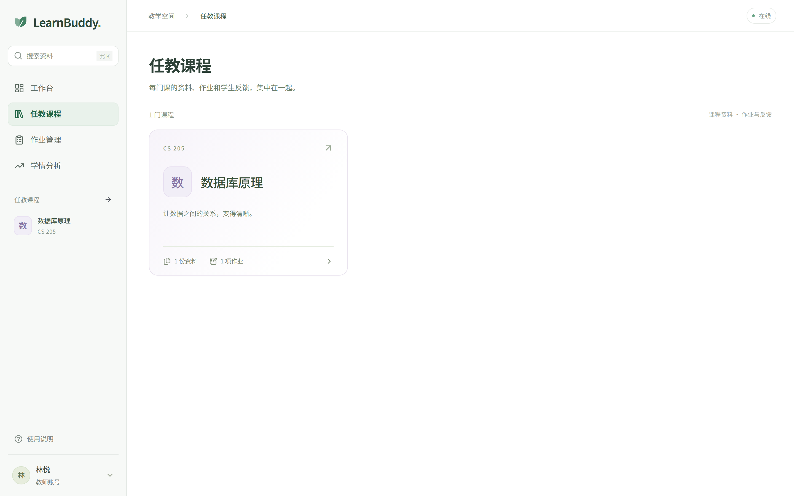 课程库 线上 3088 #courses 11-teacher-courses.png · 246 KB · 2880×1800 LearnBuddy. 搜索资料 ⌘ K 工作台 任教课程 作业管理 学情分析 任教课程 数 数据库原理 CS 205 使用说明 林 林悦
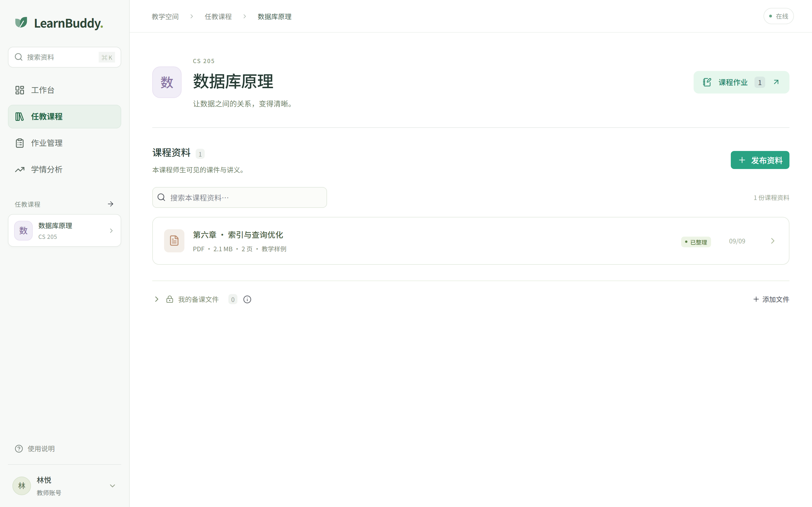 课程工作区 线上 3088 #course/database 12-teacher-course.png · 165 KB · 2880×1800 LearnBuddy. 搜索资料 ⌘ K 工作台 任教课程 作业管理 学情分析 任教课程 数 数据库原理 CS 205 使用说明 林 林悦
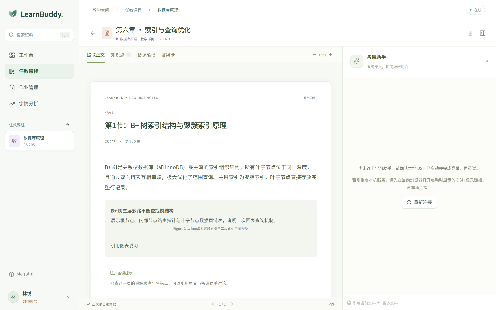 课件工作区 线上 3088 #material/mat-db 13-teacher-material.png · 307 KB · 2880×1800 LearnBuddy. 搜索资料 ⌘ K 工作台 任教课程 作业管理 学情分析 任教课程 数 数据库原理 CS 205 使用说明 林 林悦 教师视角的同一份课件（对照上面的学生视角）。
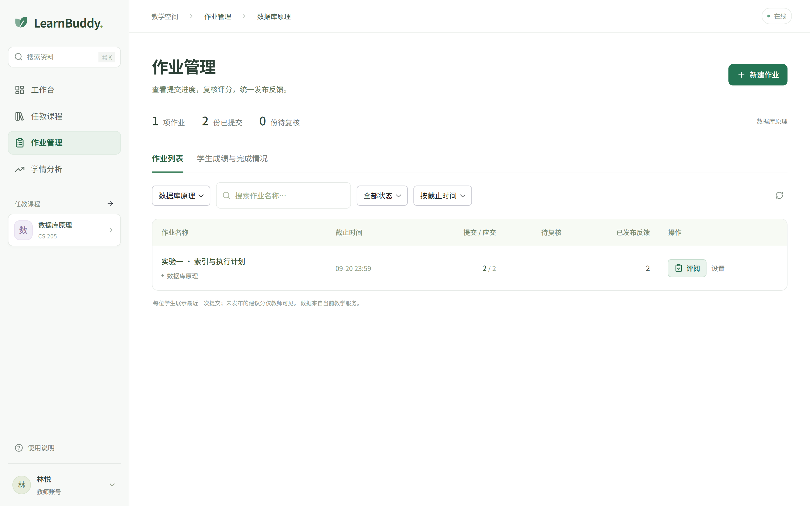 作业列表 线上 3088 #assignments/database 14-teacher-assignments.png · 189 KB · 2880×1800 LearnBuddy. 搜索资料 ⌘ K 工作台 任教课程 作业管理 学情分析 任教课程 数 数据库原理 CS 205 使用说明 林 林悦
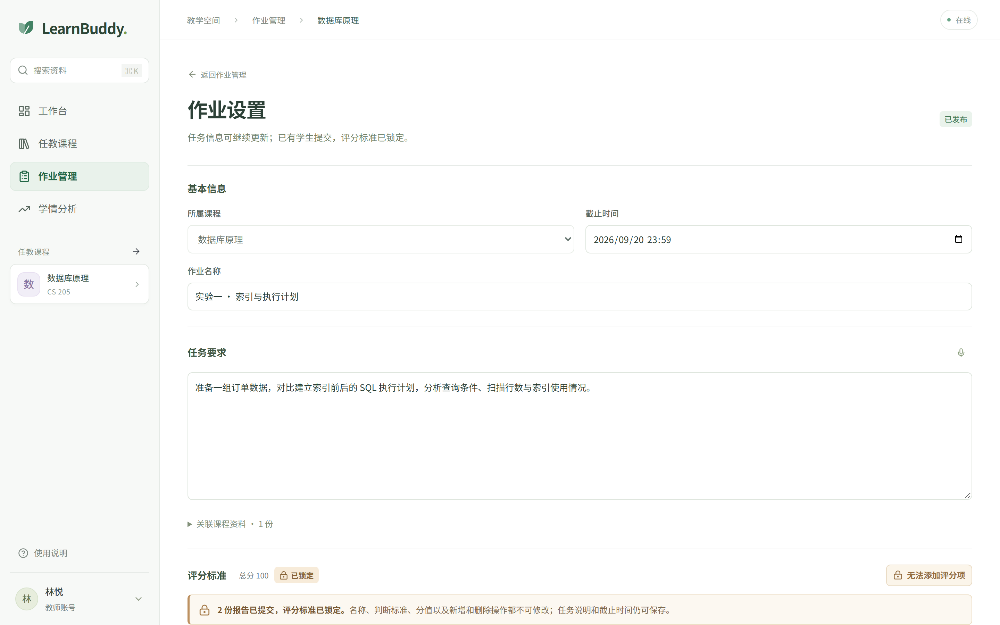 作业详情 / 布置 线上 3088 #assignment/lab-db 15-teacher-assignment.png · 210 KB · 2880×1800 LearnBuddy. 搜索资料 ⌘ K 工作台 任教课程 作业管理 学情分析 任教课程 数 数据库原理 CS 205 使用说明 林 林悦
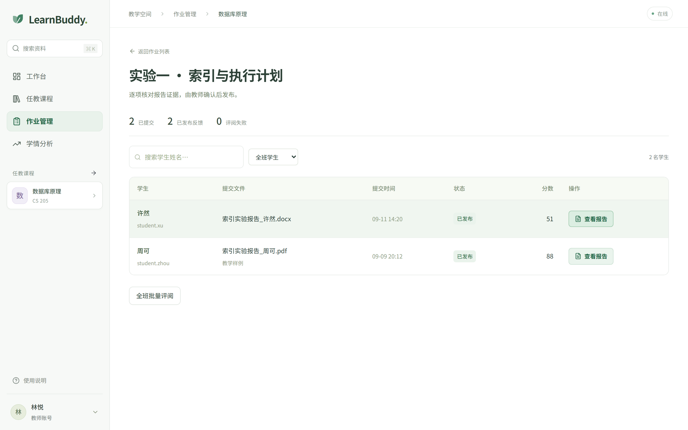 评阅台（全班） 线上 3088 #grading/lab-db 16-teacher-grading.png · 188 KB · 2880×1800 LearnBuddy. 搜索资料 ⌘ K 工作台 任教课程 作业管理 学情分析 任教课程 数 数据库原理 CS 205 使用说明 林 林悦
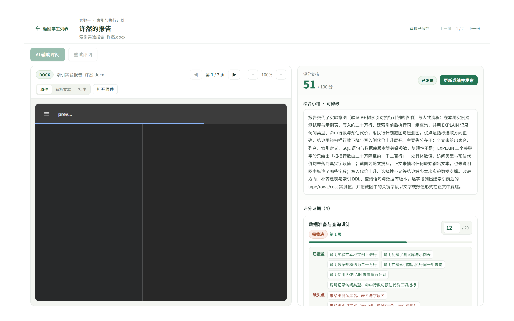 在线评阅（聚焦单份） 线上 3088 #grading/lab-db/sub-xu-db 17-teacher-review.png · 380 KB · 2880×1800 返回学生列表 实验一 · 索引与执行计划 许然的报告 索引实验报告_许然.docx 草稿已保存 上一份 1 / 2 下一份 AI 辅助评阅 左栏是学生原件（DOCX，转 PDF 预览），右栏是评分复核 + 评分证据。
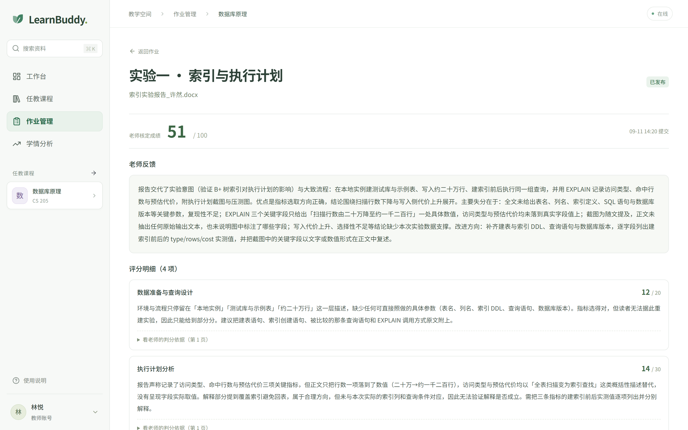 报告工作区 线上 3088 #report/sub-xu-db 18-teacher-report.png · 453 KB · 2880×1800 LearnBuddy. 搜索资料 ⌘ K 工作台 任教课程 作业管理 学情分析 任教课程 数 数据库原理 CS 205 使用说明 林 林悦
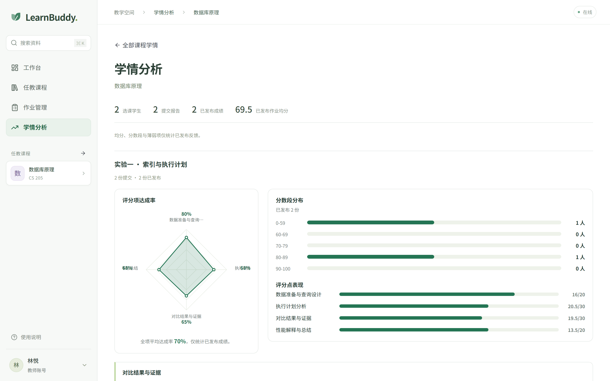 学情分析 线上 3088 #insights/database 19-teacher-insights.png · 240 KB · 2880×1800 LearnBuddy. 搜索资料 ⌘ K 工作台 任教课程 作业管理 学情分析 任教课程 数 数据库原理 CS 205 使用说明 林 林悦 学情分析只有教师能看，与学生视角那张对照。
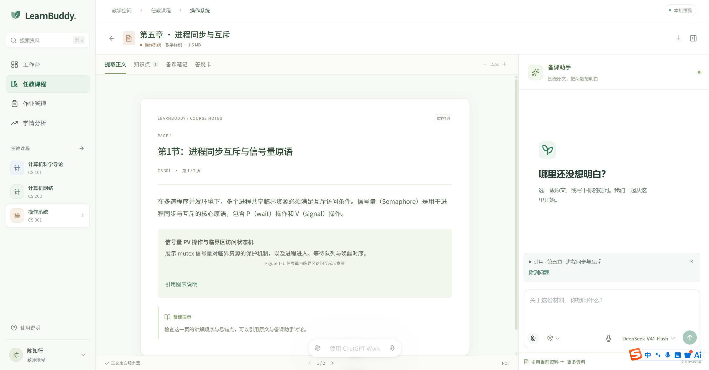 课件工作区 · 备课助手 + 备课笔记 / 答疑卡 本机预览（用户提供） #material/mat-os 操作系统 · 第五章 · 进程同步与互斥（mat-os） 31-teacher-material-prep-assistant.png · 272 KB · 2559×1338 操作系统 第五章 进程同步与互斥 备课助手 提取正文 知识点 备课笔记 答疑卡 引用当前资料 本机预览 教师视角比学生多两个页签：**备课笔记 / 答疑卡**；右侧面板此时叫 **备课助手**（学生侧叫学习助手）。这是线上那批截图里没有的形态 —— 同一页面对教师与学生呈现不同工具集。
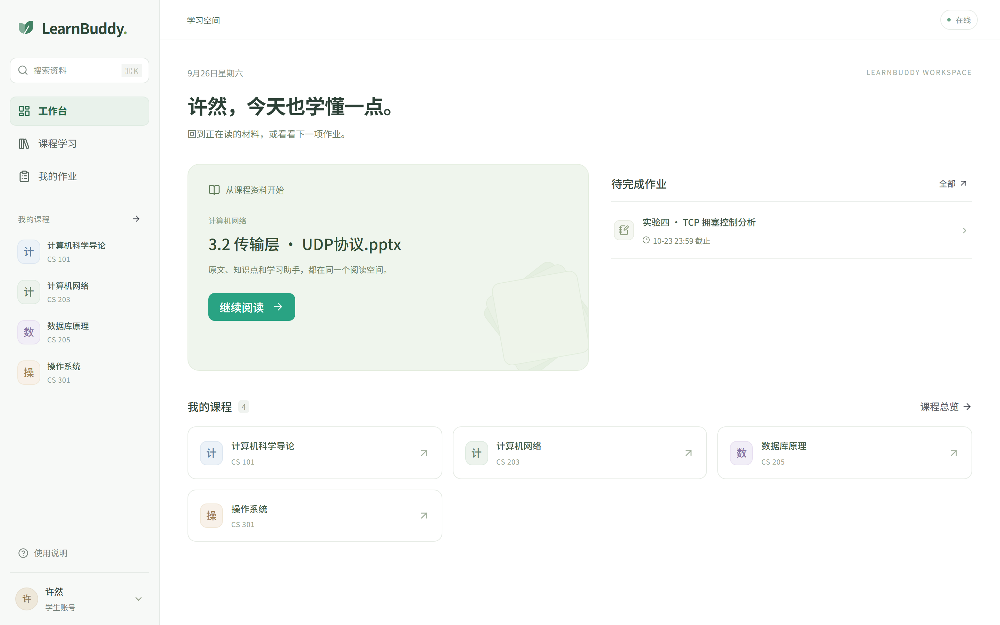 学习空间（学生首页） 线上 3088 #home 20-student-home.png · 234 KB · 2880×1800 LearnBuddy. 搜索资料 ⌘ K 工作台 课程学习 我的作业 我的课程 计 计算机科学导论 CS 101 计 计算机网络 CS 20
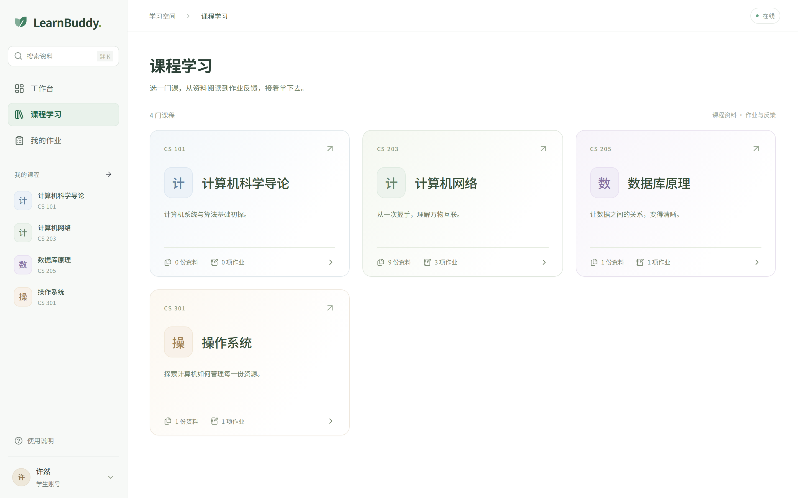 课程库（学生所见 4 门课） 线上 3088 #courses 21-student-courses.png · 647 KB · 2880×1800 LearnBuddy. 搜索资料 ⌘ K 工作台 课程学习 我的作业 我的课程 计 计算机科学导论 CS 101 计 计算机网络 CS 20
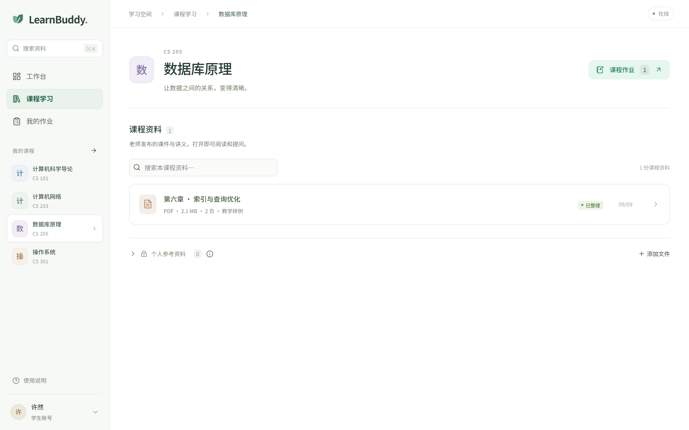 课程工作区 线上 3088 #course/database 22-student-course.png · 180 KB · 2880×1800 LearnBuddy. 搜索资料 ⌘ K 工作台 课程学习 我的作业 我的课程 计 计算机科学导论 CS 101 计 计算机网络 CS 20
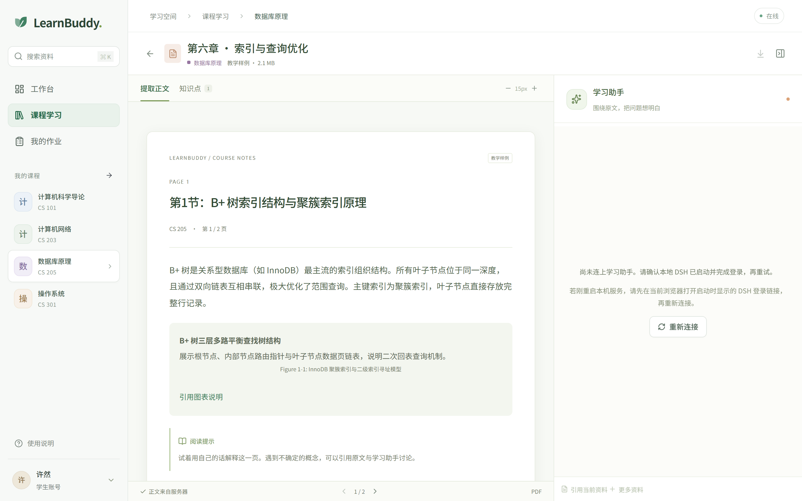 课件阅读 + 学习助手 线上 3088 #material/mat-db 23-student-material.png · 320 KB · 2880×1800 LearnBuddy. 搜索资料 ⌘ K 工作台 课程学习 我的作业 我的课程 计 计算机科学导论 CS 101 计 计算机网络 CS 20 左侧课件阅读正常（正文来自服务器）；右侧「学习助手」面板本次采集时**未连上**，面板自己给出了原因与重连入口。
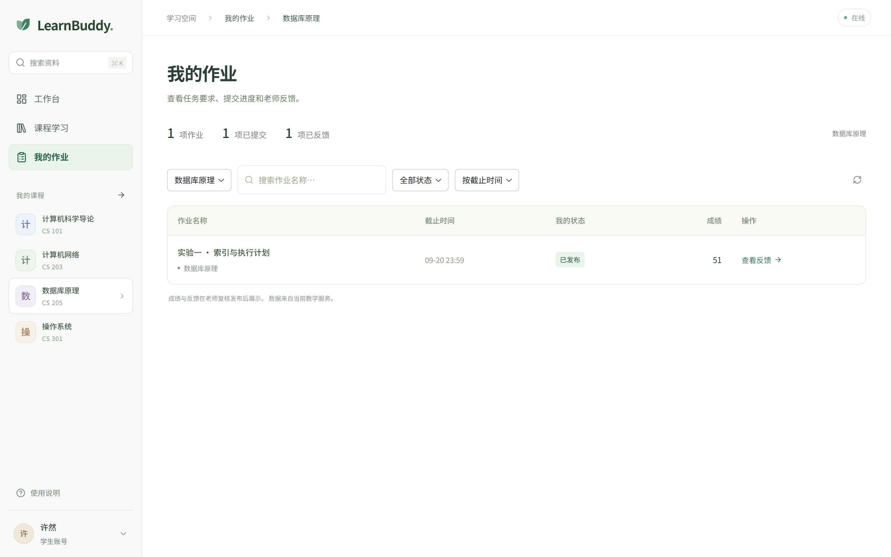 我的作业 线上 3088 #assignments/database 24-student-assignments.png · 185 KB · 2880×1800 LearnBuddy. 搜索资料 ⌘ K 工作台 课程学习 我的作业 我的课程 计 计算机科学导论 CS 101 计 计算机网络 CS 20
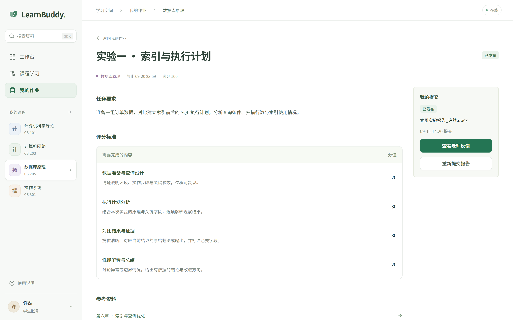 作业提交页 线上 3088 #assignment/lab-db 25-student-assignment.png · 282 KB · 2880×1800 LearnBuddy. 搜索资料 ⌘ K 工作台 课程学习 我的作业 我的课程 计 计算机科学导论 CS 101 计 计算机网络 CS 20
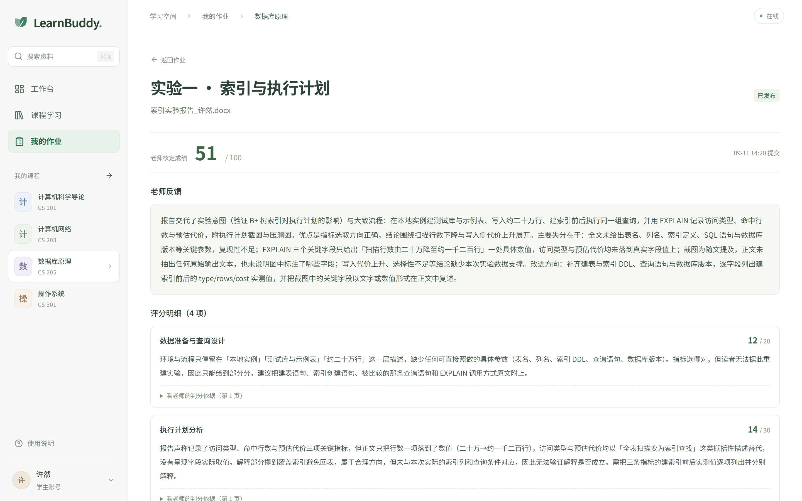 我的报告 线上 3088 #report/sub-xu-db 26-student-report.png · 467 KB · 2880×1800 LearnBuddy. 搜索资料 ⌘ K 工作台 课程学习 我的作业 我的课程 计 计算机科学导论 CS 101 计 计算机网络 CS 20
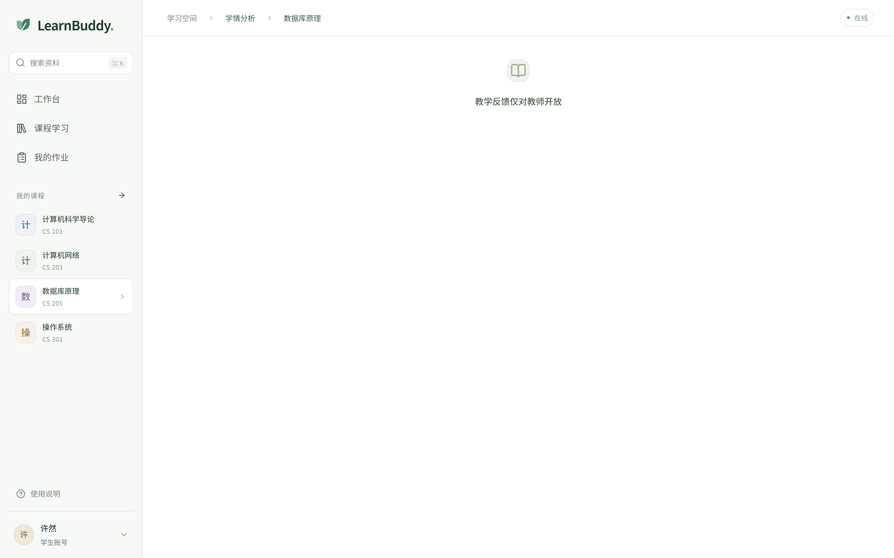 我的学情（学生视角） 线上 3088 #insights/database 27-student-insights.png · 108 KB · 2880×1800 LearnBuddy. 搜索资料 ⌘ K 工作台 课程学习 我的作业 我的课程 计 计算机科学导论 CS 101 计 计算机网络 CS 20 学生打开学情分析会看到「教学反馈仅对教师开放」——这是**角色权限拦截**，不是页面故障。
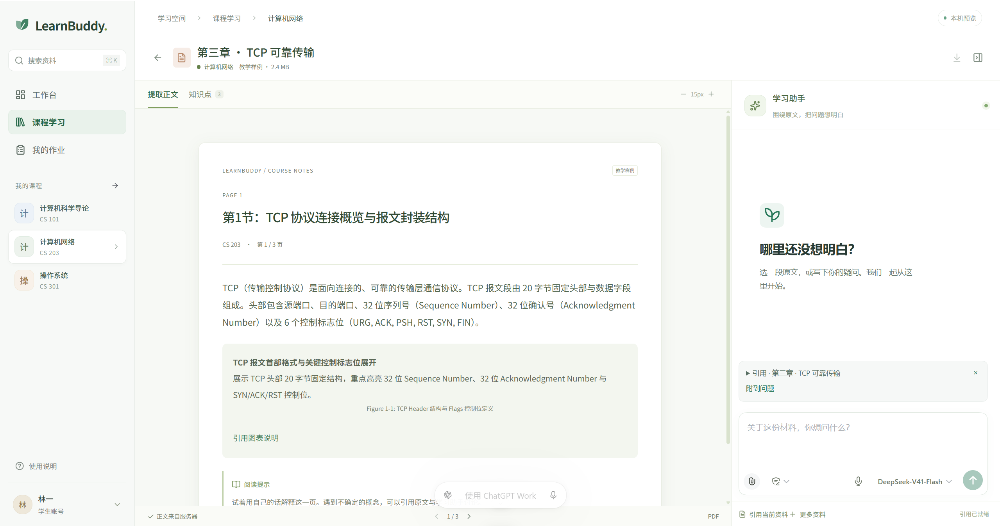 课件阅读 + 学习助手（助手可用） 本机预览（用户提供） #material/mat-tcp 计算机网络 · 第三章 · TCP 可靠传输（mat-tcp） 30-student-material-assistant.png · 281 KB · 2559×1347 计算机网络 第三章 TCP 可靠传输 学习助手 提取正文 知识点 引用当前资料 DeepSeek 本机预览 正文来自服务器 专门补的对照图：**本机预览下学习助手是连通可用的**（有引导语、引用当前资料、模型选择、提问框），右下角标注「本机预览」、底部标注「正文来自服务器」。与线上那张 23-student-material 的「未连上」形成对照。